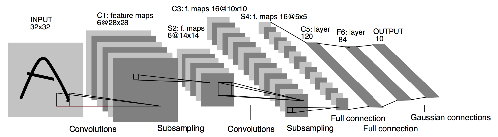

In this project, deep neural networks and convolutional neural networks are implemented in order to clone driving behavior. Keras is used for fraining, validation and testing. The model will output a steering angle to an autonomous vehicle. Also, the output is visualised in a car simulator to show that the car can drive autonomously around a track.

The goals / steps of this project are the following:
My project includes the following files:
Using the Udacity provided simulator and my drive.py file, the car can be driven autonomously around the track by executing
python drive.py models/<modelname.h5>
The model model_LeNet.h5 generate the best results, i.e., vehicle is able to drive autonomously around the track without leaving the road.
The model.py file contains the code for training and saving the convolution neural network. The file shows the pipeline I used for training and validating the model, and it contains comments to explain how the code works.
This project aims to clone or mimic our behaviour while driving and make a car drive autonmosly. In order to do this, I had to o capture good driving behavior, I recorded (through the Udacity simulator) two laps on track one using center lane driving. First track is a normal complete lap and the second is an inverted lap (from exit to start). Here is an example image of center lane driving:
I then recorded the vehicle recovering from the left side and right sides of the road back to center so that the vehicle would learn to recover when driving off the centre because side images provide more useful information than if we were training only with centre images. There are some potential failure points during driving, so I also captured this specific images for vehicle recovering:
Then I repeated this process on track two in order to get more data points.
To augment the data set, I also flipped images and angles thinking that this would help for training because most of the time the model was learning to steer to the left, by addiing flipped versions of the images we can tackle. Now the vehicle learns to steer either to the right or to the left. For example, here is an image that has then been flipped:
After the collection process, I had the following:
Once data was collected, I then normalised it. Normalisation is useful to eliminates big variations across the data set. I decided to implement a 0-1 normalisation, i.e., data ranges from 0 to 1 and then zero-mean centered.
Last feature was to crop the image 70 pixels from top and 20 pixels from bottom. The reason of this is to avoid the model to "over" learn unnecessary features like the sky, trees and even the car hood.
This work was based on the LeNet5 architecture introduced by LeCun et al. in their 1998. Changes to the architecture was the input size. LeNet5 originally takes inputs of (28x28x1), in this case we feed the model with images of shape (160x320x3). Another change was the input depth, I increased it from 6 to 8, the rest is pretty much the same as LeNet.
LeNet5 architecture: 
I randomly shuffled the complete data set and put 20% of the data into a validation set (straight on the model.fit function).
I used this training data for training the model. The validation set helped determine if the model was over or under fitting. The final number of epochs used for training was 5. I used an adam optimizer so that manually training the learning rate wasn't necessary.
The overall strategy for deriving a model architecture was to tests different data sets, at the end I came up with a collection of three sets of images. The first one capturing a complete turn, the second one intended to capture left and right turns, side objects, lane lines, etc., and finally the the last one was to consider the track in the other way.
The final model hyperparameters:
One interesting point is that my model does not contain dropout layers. My first believe was to include it because dropout techniques are very helpfull in order to reduce overfitting. Mean squared erros of both training and validation set were reasonable stable and this derive in nice results. I actually try once with droput layer (a droput rate of .20 and .70), after the last convolution but results were not that accurate.
The model was trained and validated on different data sets to ensure that the model was not overfitting. The model was tested by running it through the simulator and ensuring that the vehicle could stay on the track.
My final model consists of the following architecture:
| Layer | Description |
|---|---|
| Input | 160x320x3 COLOURED image |
| Convolution 3x3 | 1x1 stride, same padding, outputs 28x28x8 |
| RELU | Activation (Nonlinearity) |
| Max pooling | 2x2 stride, outputs 14x14x6 |
| Convolution 3x3 | 1x1 stride, same padding, outputs 10x10x16 |
| RELU | Activation (Nonlinearity) |
| Max pooling | 2x2 stride, outputs 5x5x16 |
| Flatten | Flatten the output shape 3D->1D |
| Fully connected | Array of 120 elements |
| RELU | Activation (Nonlinearity) |
| Max pooling | 2x2 stride, outputs 5x5x16 |
| Fully connected | Array of 84 elements |
| RELU | Activation (Nonlinearity) |
| Fully connected | 1 output (steering angle) |
Training data was chosen to keep the vehicle driving on the road. I used a combination of center lane driving, recovering from the left and right sides of the road in multiple scenarios where the model was failing, and doing turns in the other way.
The final step was to run the simulator to see how well the car was driving around track one. There were few spots where the vehicle fell off the track, these spots were considered during creation of the training set. Doing a lap in the other way around made a huge positive difference when testing the model through the simulator.
At the end of the process, the vehicle is able to drive autonomously around the track without leaving the road!
Here's a link to my video result.
It is very interesting how the deep learning approach to make a car drive autonomously is also very powerful. In this case my model performs well for track 1 but for track 2 still need to be trained.
One further step would be to try other deep learning architectures. I based my work on the LeNet-5 architecture, next step is to try the NVIDIA approach for self drving cars a very powerful deep learning architecture for self-driving cars.
Thank you for reading this report.
Daniel